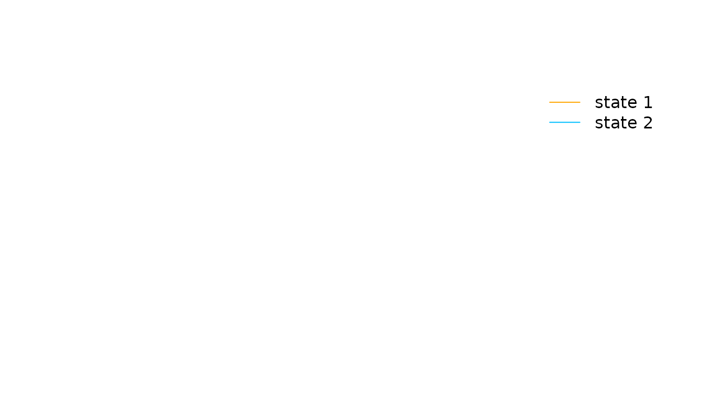
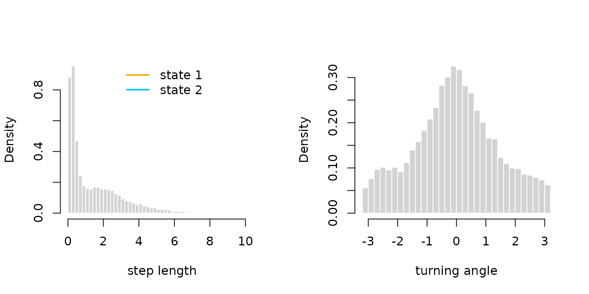
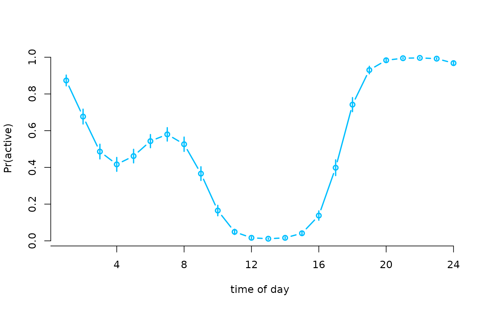

The recently introduced R package RTMB
conveniently allows for automatic differentiation for non-standard
statistical models written in plain R code. This enables
the estimation of very complicated models, potentially with complex
random effect structures. The process feels like magic because you have
access to analytic gradients – drastically increasing accuracy
and speed – without doing any calculations!
LaMa now also allows for automatic differentiation with
RTMB for most of its functions when you set
ad = TRUE. Hence, estimation of latent Markov models is now
faster and more convenient, while model specification is very smooth and
less prone to errors – which at the current state tend to happen when
one is not experienced with RTMB.
Here we demonstrate how to use LaMa and
RTMB to fit hidden Markov models and their extensions. We
always start by loading both packages.
For the purpose of this vignette, we will analyze the
elephant data set contained in the LaMa
package:
head(elephant, 5)
#> tod step angle state
#> 1 9 0.3252437 NA 1
#> 2 10 0.2458265 2.234562 1
#> 3 11 0.2173252 -2.262418 1
#> 4 12 0.5114665 -2.958732 1
#> 5 13 0.3828494 1.811840 1Basic workflow
The workflow with RTMB is basically always the same. We
need to
- define the negative log-likelihood function,
- create an automatically differentiable objective function from it and
- fit the model by numerical minimization of the latter.
RTMB also provides many functions that make this process
very convenient.
Simple HMM
We start by fitting a super simple stationary HMM with
state-dependent gamma distributions for the step lengths and von Mises
distributions for the turning angles. As a first step, we define the
initial parameter list par and a dat list that
contains the data and potential hyperparamters – here
,
the number of hidden states. The names par and
dat are of course arbitrary.
par = list(
logmu = log(c(0.3, 1)), # initial means for step length (log-transformed)
logsigma = log(c(0.2, 0.7)), # initial sds for step length (log-transformed)
logkappa = log(c(0.2, 0.7)), # initial concentration for turning angle (log-transformed)
eta = rep(-2, 2) # initial t.p.m. parameters (on logit scale)
)
dat = list(
step = elephant$step[1:5000], # only using a subset of the data for faster computation
angle = elephant$angle[1:5000],
N = 2
)As par is a named list of initial parameter values,
accessing the parameters later on is much more convenient than indexing.
You can also use a parameter vector with RTMB, but using a
named list makes our life so much easier.
We can now define the negative log-likelihood function in a similar fashion to basic numerical ML
nll = function(par) {
getAll(par, dat) # makes everything contained available without $
Gamma = tpm(eta) # computes transition probability matrix from unconstrained eta
delta = stationary(Gamma) # computes stationary distribution
# exponentiating because all parameters strictly positive
mu = exp(logmu)
sigma = exp(logsigma)
kappa = exp(logkappa)
# reporting statements for later use
REPORT(mu); ADREPORT(mu)
REPORT(sigma); ADREPORT(sigma)
REPORT(kappa); ADREPORT(kappa)
# calculating all state-dependent densities
allprobs = matrix(1, nrow = length(step), ncol = N)
ind = which(!is.na(step) & !is.na(angle)) # only for non-NA obs.
for(j in 1:N){
allprobs[ind,j] = dgamma2(step[ind],mu[j],sigma[j])*dvm(angle[ind],0,kappa[j])
}
-forward(delta, Gamma, allprobs) # simple forward algorithm
}but a few points should be made here:
- Most prominently, the negative log-likelihood is a function of the
parameters to be estimated only while data and other parameters
are not passed as an argument at this stage. This is something to get
used to (I know), but just the way
RTMBworks. - The
getAll()function is very useful and you should use it in the first line to unpack both theparand thedatlist, making all elements available without the$operator. At this stage,nlljust takes the dat object from the global environment. - Parameter transformations are of course still necessary, i.e. all
parameters in
parshould be unconstrained. - You might wonder how on earth
RTMBcan calculate the gradient of parameters in distributions like the gamma or von Mises distribution. The answer is: It can’t but provides its own version of all standard distributions likednorm(),dbinom(), etc. In this case bothdgamma2()anddvm()come fromLaMaas these are non-standard, but under the hood build onRTMBfunctions (dgamma2()is actually just a convenience function that reparametrizes the gamma distribution in terms of mean and standard deviation). - Actually, most of the standard functions (e.g.
sum()), operators (e.g.%*%) and methods (e.g.matrix) are “overwritten” when called insideMakeADFun()but you typically don’t notice that and should not care – but this is how the magic works. - the
REPORT()function offered byRTMBis really convenient as any quantities calculated in the likelihood function (for which you have written the code anyway), if reported, will be available after optimization, while the report statements are ignored during optimization. So no annoying backtransformations anymore, wohoo! - for simple parameter transformations,
ADREPORT()is also great, because it calculates standard deviations forADREPORT()ed quantities, based on the delta method. Just note that the delta method is not advisable for complex non-linear and multivariate transformations.
Having defined the negative log-likelihood, we can now create the
autmatically differentiable objective function and fit the model. This
needs a little explanation: At this point, RTMB takes the
negative log-likelihood function and generates its own version of it,
including a gradient. MakeADFun() now also grabs whatever
is saved as dat in the global environment and
bakes it into the objective function. Therefore, changes to
dat after this point will have no effect on the
optimization result. We set silent = TRUE to suppress
printing of the optimization process.
obj = MakeADFun(nll, par, silent = TRUE) # creating the objective functionLet’s check out obj:
names(obj)
#> [1] "par" "fn" "gr" "he" "hessian" "method"
#> [7] "retape" "env" "report" "simulate"It contains the initial parameter par (now tranformed to
a named vector), the objective function fn (which in this
case just evaluates nll but faster), its gradient
gr and Hessian he.
If we now call these functions without any argument, we get the corresponding values at the initial parameter vector.
obj$par
#> logmu logmu logsigma logsigma logkappa logkappa eta
#> -1.2039728 0.0000000 -1.6094379 -0.3566749 -1.6094379 -0.3566749 -2.0000000
#> eta
#> -2.0000000
obj$fn()
#> [1] 16584.4
obj$gr()
#> [,1] [,2] [,3] [,4] [,5] [,6] [,7] [,8]
#> [1,] 230.5857 -1218.71 56.12643 -5906.308 30.71142 -408.9433 63.43363 -95.75145We are now ready to optimize the objective function. The optimization
routine nlminb() is very robust and conveniently allows us
to provide a gradient function. Alternatively, you can also use
optim() or any other optimizer you like that allows you to
pass a gradient function.
Indeed, we do not provide the Hessian to nlminb()
because while evaluating the Hessian is very fast with
RTMB, optimization is still much faster if we use a
quasi-Newton algorithm that approximates the current Hessian based on
previous gradient evaluations, compared to using full
Newton-Raphson.
opt = nlminb(obj$par, obj$fn, obj$gr) # optimizationWe can check out the estimated parameter and function value by
opt$par
#> logmu logmu logsigma logsigma logkappa logkappa eta
#> -1.1816492 0.9109406 -1.5899770 0.3893447 -2.5112980 0.4258548 -1.6174757
#> eta
#> -1.5348844
opt$objective
#> [1] 13617.45Note that the naming here is determined by nlminb(). If
you use a different optimizer, these may be called differently.
Much nicer however, is that obj (yes obj
not opt) is automatically updated after the optimization.
Note that calling obj$gr() after optimization now gives the
gradient at the optimum, while obj$fn() still gives the
objective at the starting value and obj$par is not updated
but still the initial parameter vector (kind of confusing).
To get our estimated parameters on their natural scale, we don’t have to do the backtransformation manually. We can just run the reporting:
mod = obj$report() # runs the reporting from the negative log-likelihood once
(delta = mod$delta)
#> state 1 state 2
#> 0.4828971 0.5171029
(Gamma = mod$Gamma)
#> [,1] [,2]
#> [1,] 0.8227198 0.1772802
#> [2,] 0.1655533 0.8344467
(mu = mod$mu)
#> [1] 0.3067724 2.4866604
(sigma = mod$sigma)
#> [1] 0.2039303 1.4760132
(kappa = mod$kappa)
#> [1] 0.08116282 1.53089842which works because of the REPORT() statements in the
likelihood function. Note that delta, Gamma
and allprobs are always reported by default when using
forward() which is very useful for e.g. state decoding with
viterbi(), because many downstream LaMa
functions take these arguments as inputs. As the state-dependent
parameters depend on the specific model formulation, these need to be
reported manually by the user specifying the negative log-likelihood.
Having all the parameters, we can plot the decoded time series
mod$states = viterbi(mod$delta, mod$Gamma, mod$allprobs)
# defining color vector
color = c("orange", "deepskyblue")
plot(elephant$step[1:200], type = "h", xlab = "time", ylab = "step length",
col = color[mod$states[1:200]], bty = "n")
legend("topright", col = color, lwd = 1, legend = c("state 1", "state 2"), bty = "n")
or the estimated state-dependent distributions.
oldpar = par(mfrow = c(1,2))
hist(elephant$step, prob = TRUE, breaks = 40,
bor = "white", main = "", xlab = "step length")
for(j in 1:2) curve(delta[j] * dgamma2(x, mu[j], sigma[j]),
lwd = 2, add = T, col = color[j])
curve(delta[1]*dgamma2(x, mu[1], sigma[1]) + delta[2]*dgamma2(x, mu[2], sigma[2]),
lwd = 2, lty = 2, add = T)
legend("top", lwd = 2, col = color, legend = c("state 1", "state 2"), bty = "n")
hist(elephant$angle, prob = TRUE, breaks = 40,
bor = "white", main = "", xlab = "turning angle")
for(j in 1:2) curve(delta[j] * dvm(x, 0, kappa[j]),
lwd = 2, add = T, col = color[j])
curve(delta[1]*dvm(x, 0, kappa[1]) + delta[2]*dvm(x, 0, kappa[2]),
lwd = 2, lty = 2, add = T)
par(oldpar) # resetting to defaultLastly, we can also use the sdreport() function to
directly give us standard errors for our unconstrained parameters and
everything we ADREPORT()ed.
sdr = sdreport(obj)We can then get an overview of the estimated parameters and
ADREPORT()ed quantities as well as their standard errors
by
summary(sdr)
#> Estimate Std. Error
#> logmu -1.18164921 0.015816840
#> logmu 0.91094060 0.012568349
#> logsigma -1.58997698 0.023262636
#> logsigma 0.38934467 0.018793398
#> logkappa -2.51129801 0.366127132
#> logkappa 0.42585477 0.027176879
#> eta -1.61747569 0.058270035
#> eta -1.53488440 0.056943182
#> mu 0.30677239 0.004852170
#> mu 2.48666039 0.031253215
#> sigma 0.20393031 0.004743956
#> sigma 1.47601320 0.027739303
#> kappa 0.08116282 0.029715911
#> kappa 1.53089842 0.041605041To get the estimated parameters or their standard errors in list format, type
# estimated parameter in list format
as.list(sdr, "Estimate")
# parameter standard errors in list format
as.list(sdr, "Std")and to get the estimates and standard errors for
ADREPORT()ed quantities in list format, type
Covariate effects
Generalizing to covariate effects is also straightforward. For
example, we can add time of day variation to the state process. In this
case we want to obtain a state process model of the form
where
is the time of day. For this we compute the trigonometric basis design
matrix Z corresponding to above predictor and add the time
of day to the dat list. The LaMa function
trigBasisExp() does this very conveniently.
# building trigonometric basis desing matrix (in this case no intercept column)
Z = trigBasisExp(1:24, degree = 2) # convenience function from LaMa
# only compute the 24 unique values and index later for entire time series
dat$Z = Z # adding design matrix to dat
dat$tod = elephant$tod # adding time of day to dat for indexingWe also need to change the parameter list par to include
the regression parameters for the time of day. The regression parameters
for the state process will typically have the form of a
matrix, where
is the number of states and
is the number of regressors – this format is also expected by
tpm_g() which computes the array of transition matrices
based on the design and parameter matrix. Another lovely convenience
that RTMB allows for is that, in our parameter list, we can
have matrices, making reshaping of vectors to matrices inside the
likelihood function unnessesary.
par = list(logmu = log(c(0.3, 1)),
logsigma = log(c(0.2, 0.7)),
logkappa = log(c(0.2, 0.7)),
beta = matrix(c(rep(-2, 2),
rep(0, 2*ncol(Z))), nrow = 2)) # 2 times 4+1 matrix
# replacing eta with regression parameter matrix, initializing slopes at zeroWe can now define a more general likelihood function with the main
difference being the use of tpm_g() instead of
tpm() and the inclusion of the time of day in the
transition matrix calculation. This leads to us using
stationary_p() instead of stationary() to
calculate the initial distribuion and forward_g() instead
of forward() to calculate the log-likelihood.
nll2 = function(par) {
getAll(par, dat) # makes everything contained available without $
Gamma = tpm_g(Z, beta) # covariate-dependent tpms (in this case only 24 unique)
# tpm_g() automatically checks if intercept column is included
ADREPORT(Gamma) # adreporting
Delta = stationary_p(Gamma) # periodically stationary distribution
ADREPORT(Delta)
delta = Delta[tod[1],] # initial periodically stationary distribution
# exponentiating because all parameters strictly positive
mu = exp(logmu); REPORT(mu)
sigma = exp(logsigma); REPORT(sigma)
kappa = exp(logkappa); REPORT(kappa)
# calculating all state-dependent densities
allprobs = matrix(1, nrow = length(step), ncol = N)
ind = which(!is.na(step) & !is.na(angle)) # only for non-NA obs.
for(j in 1:N){
allprobs[ind,j] = dgamma2(step[ind],mu[j],sigma[j])*dvm(angle[ind],0,kappa[j])
}
-forward_g(delta, Gamma[,,tod], allprobs) # indexing 24 unique tpms by tod in data
}Having done this, the model fit is then essentially the same:
obj2 = MakeADFun(nll2, par, silent = TRUE) # creating the objective function
opt2 = nlminb(obj2$par, obj2$fn, obj2$gr) # optimizationand we can look at the reported results. In this case, for simplicity
I get standard errors for Gamma with the delta method
while, in general, this is not advisable.
mod2 = obj2$report()
sdr = sdreport(obj2)
Gamma = as.list(sdr, "Estimate", report = TRUE)$Gamma
Gammasd = as.list(sdr, "Std", report = TRUE)$Gamma
Delta = as.list(sdr, "Estimate", report = TRUE)$Delta
Deltasd = as.list(sdr, "Std", report = TRUE)$Delta
tod_seq = seq(0, 24, length = 200) # sequence for plotting
Z_pred = trigBasisExp(tod_seq, degree = 2) # design matrix for prediction
Gamma_plot = tpm_g(Z_pred, mod2$beta) # interpolating transition probs
plot(tod_seq, Gamma_plot[1,2,], type = "l", lwd = 2, ylim = c(0,1),
xlab = "time of day", ylab = "transition probability", bty = "n")
segments(x0 = 1:24, y0 = Gamma[1,2,]-1.96*Gammasd[1,2,],
y1 = Gamma[1,2,]+1.96*Gammasd[1,2,])
segments(x0 = 1:24, y0 = Gamma[2,1,]-1.96*Gammasd[2,1,],
y1 = Gamma[2,1,]+1.96*Gammasd[2,1,])
lines(tod_seq, Gamma_plot[2,1,], lwd = 2, lty = 3)
legend("topleft", lwd = 2, lty = c(1,3), bty = "n",
legend = c(expression(gamma[12]^(t)), expression(gamma[21]^(t))))
plot(Delta[,2], type = "b", lwd = 2, xlab = "time of day", ylab = "Pr(active)",
col = "deepskyblue", bty = "n", xaxt = "n")
segments(x0 = 1:24, y0 = Delta[,2]-1.96*Deltasd[,2], lwd = 2,
y1 = Delta[,2]+1.96*Deltasd[,2], col = "deepskyblue")
axis(1, at = seq(0,24,by=4), labels = seq(0,24,by=4))
Penalized splines
We can go one step further and model the transition probabilities as
smooth functions of the time of day using cyclic P-splines, i.e.
where
is a smooth periodic function of time of day. LaMa provides
the function make_matrices() which creates design and
penalty matrices based on the R package mgcv when provided
with a formula and data. Hence, we can use standard mgcv
syntax to create the matrices for cyclic P-splines (cp). We
then append both to the dat list.
modmat = make_matrices(~ s(tod, bs = "cp"),
data = data.frame(tod = 1:24),
knots = list(tod = c(0,24))) # where to wrap the cyclic basis
Z = modmat$Z # spline design matrix
S = modmat$S # penalty matrix
dat$Z = Z
dat$S = S[[1]] # mgcv returns a list of penalty matrices (even if only one smooth)We have to change our likelihood function slightly by adding the
penalization. For this we use the penalty() function
contained in LaMa that computes the sum of quadratic form
penalties (the standard penalty used for penalized splines) based on the
penalty matrices, the parameters to be estimated and the penalty
strength parameters.
Importantly, we now have to separate the non-penalized intercept
beta0 from the penalized spline coefficients now called
betaspline. The latter, we again conveniently initialize as
a matrix, each row representing the coefficient vector for one
off-diagonal element of the t.p.m.
pnll = function(par) {
getAll(par, dat) # makes everything contained available without $
Gamma = tpm_g(Z, cbind(beta0, betaspline)); ADREPORT(Gamma)
Delta = stationary_p(Gamma); ADREPORT(Delta)
delta = Delta[tod[1],]
# exponentiating because all parameters strictly positive
mu = exp(logmu); REPORT(mu)
sigma = exp(logsigma); REPORT(sigma)
kappa = exp(logkappa); REPORT(kappa)
# calculating all state-dependent densities
allprobs = matrix(1, nrow = length(step), ncol = N)
ind = which(!is.na(step) & !is.na(angle)) # only for non-NA obs.
for(j in 1:N){
allprobs[ind,j] = dgamma2(step[ind],mu[j],sigma[j])*dvm(angle[ind],0,kappa[j])
}
-forward_g(delta, Gamma[,,tod], allprobs) +
penalty(betaspline, S, lambda) # this does all the penalization work
}We also have to append a lambda argument to our
dat list, which is the initial penalty strength parameter
vector. In this case of length two because our coefficient matrix has
two rows.
par = list(logmu = log(c(0.3, 2.5)),
logsigma = log(c(0.2, 1.5)),
logkappa = log(c(0.2, 1.5)),
beta0 = c(-2, 2), # intercept now separated!
betaspline = matrix(rep(0, 2*(ncol(Z)-1)), nrow = 2))
dat$lambda = rep(100, 2) # adding initial penalty strength to the dat listThe model fit can then be conducted by using the qreml()
function contained in LaMa. qREML stands
for quasi restricted maximum likelihood and finds a
good penalty strength by treating the spline coefficients as random
effects. Under the hood, qreml() also constructs an AD
function with RTMB but uses the qREML
algorithm described in Koslik (2024) to fit the model. We have to tell
the qreml() function which parameters are spline
coefficients by providing the name of the corresponding list element of
par.
There are some rules to follow when using qreml():
- The likelihood function needs to be
RTMB-compatible, i.e. have the same structure as all the likelihood functions in our vignette – most importantly, it should only be a function of the parameter list. - The penalty strength vector
lambdaneeds its length to correspond to the total number of spline coefficient vectors used. In our case, this is the number of rows of betaspline, but if we additionally had a different spline coefficient in our parameter list (that may have a different length and a different penalty matrix), we would have needed more elements inlambda. - The
penalty()function can only be called once in the likelihood. If several spline coefficients are penalized,penalty()expects a list of coefficient matrices or vectors and a list of penalty matrices. - When we summarise multiple spline coefficients in a matrix in our
parameter list – which is very useful when these are of same lengths and
have the same penalty matrix – this matrix must be arranged by row,
i.e. each row is one spline coefficient vector. If it is arranged by
column,
qreml()will fail.
system.time(
mod3 <- qreml(pnll, par, dat, random = "betaspline")
)
#> Creating AD function
#> Initializing with lambda: 100 100
#> outer 1 - lambda: 5.844 3.811
#> outer 2 - lambda: 0.781 0.969
#> outer 3 - lambda: 0.289 0.363
#> outer 4 - lambda: 0.205 0.179
#> outer 5 - lambda: 0.184 0.115
#> outer 6 - lambda: 0.178 0.092
#> outer 7 - lambda: 0.176 0.083
#> outer 8 - lambda: 0.175 0.079
#> outer 9 - lambda: 0.175 0.078
#> outer 10 - lambda: 0.175 0.078
#> outer 11 - lambda: 0.175 0.078
#> outer 12 - lambda: 0.175 0.078
#> Converged
#> user system elapsed
#> 5.042 0.108 5.041The mod object is now a list that contains everything
that is reported by the likelihood function, but also the
RTMB object created in the process. After fitting the
model, we can also use the LaMa function
pred_matrix(), that takes the modmat object we
created earlier, to build a new interpolating design matrix using the
exact same basis expansion specified above. This allows us to plot the
estimated transition probabilities as a smooth function of time of day –
I now ignore confidence bands due to laziness.
sdr = sdreport(mod3$obj)
Gamma = as.list(sdr, "Estimate", report = TRUE)$Gamma
Delta = as.list(sdr, "Estimate", report = TRUE)$Delta
tod_seq = seq(0,24, length=200)
Z_pred = pred_matrix(modmat, data.frame(tod = tod_seq))
Gamma_plot = tpm_g(Z_pred, mod3$beta) # interpolating transition probs
plot(tod_seq, Gamma_plot[1,2,], type = "l", lwd = 2, ylim = c(0,1),
xlab = "time of day", ylab = "transition probability", bty = "n")
lines(tod_seq, Gamma_plot[2,1,], lwd = 2, lty = 3)
legend("topleft", lwd = 2, lty = c(1,3), bty = "n",
legend = c(expression(gamma[12]^(t)), expression(gamma[21]^(t))))
plot(Delta[,2], type = "b", lwd = 2, xlab = "time of day", ylab = "Pr(active)",
col = "deepskyblue", bty = "n", xaxt = "n")
axis(1, at = seq(0,24,by=4), labels = seq(0,24,by=4))
We see that by allowing for a more flexible relationship, the estimated time of day effect becomes stronger with even sharper peaks than we would have concluded using the trigonometric approach.
Full Laplace method
Lastly, we could have achieved a similar fit as above using the
slightly more accurate full Laplace approximation method, which can be
used to fit models via marginal maximum likelihood estimation by
integrating out the random effects. This is natively supported by
RTMB – and actually one of its core selling points – and
the standard way we can now deal with all kinds of random effects.
Indeed, the qREML algorithm above treats the spline coefficients as Gaussian random effects but exploits their relatively simple structure yiedling a more efficient fitting method. The full Laplace method is much more general, allowing for very flexible random effects, but here, estimation slower because it does not exploit the simple structure of splines treated as random effects.
We have to alter our likelihood function slightly, because for the Laplace method, we need to implement the joint likelihood of the data and the random effect, the latter having a multivariate normal distribution. Specifically, if is our random effect for a spline, . The likelihood of the data given (just our regular likelihoot that treats as a parameter) is and the density of is . Hence the joint likelihood can be computed as and the joint negative log-likelihood becomes and this is what we implement below.
Most conveniently this is done by using the dgmrf2()
function included in LaMa which provides the density
function of the multivariate normal distribution reparametrized in terms
of the (scaled) precision matrix, i.e. inverse covariance matrix, which
in our case is
for spline
.
It allows evaluating at multiple points at once, each one possibly with
its own penalty strength parameter lambda. It differs from
RTMB’s dgmrf() by not expecting a
sparse precision matrix and being more robust for
rank-deficient penalty matrices, which are typical for penalized
splines.
jnll = function(par) {
getAll(par, dat) # makes everything contained available without $
Gamma = tpm_g(Z, cbind(beta0, betaspline)); ADREPORT(Gamma)
Delta = stationary_p(Gamma); ADREPORT(Delta)
delta = Delta[tod[1],]
# exponentiating because all parameters strictly positive
mu = exp(logmu); REPORT(mu)
sigma = exp(logsigma); REPORT(sigma)
kappa = exp(logkappa); REPORT(kappa)
# calculating all state-dependent densities
allprobs = matrix(1, nrow = length(step), ncol = N)
ind = which(!is.na(step) & !is.na(angle)) # only for non-NA obs.
for(j in 1:N){
allprobs[ind,j] = dgamma2(step[ind],mu[j],sigma[j])*dvm(angle[ind],0,kappa[j])
}
-forward_g(delta, Gamma[,,tod], allprobs) -
sum(dgmrf2(betaspline, 0, S, exp(loglambda), log = TRUE)) # just like any other density in R
}We also have to include the log of our penalty strength as a parameter now.
To create the objective function, we need to tell RTMB
that betaspline is a random effect such that it is
integrated out and as our objective function we have the marginal
likelihood
actually its negative log of
course.
obj4 = MakeADFun(jnll, par, random = "betaspline", silent = TRUE)
system.time(
opt4 <- nlminb(obj4$par, obj4$fn, obj4$gr)
)This more general algorithm takes more than ten times model as long to fit the model. Hence, the above code is not evaluated. The results however are very similar.
Common issues with RTMB
There are some problems with RTMB one has to keep in
mind. They can be a bit annoying, but in my opinion the benefits of
automatic differentiation far outweigh the drawbacks. I list the main
ones I have encountered here, but please tell me if you encounter more,
such that they can be added.
A typical issue with RTMB is that some operators might
need to be overloaded to allow for automatic differentiation which
cannot be done by default. In typical model setups LaMa
functions do this themselves, but if you go a very individualistic route
and get an error like
stop("Invalid argument to 'advector' (lost class attribute?)")you might have to overload the operator yourself. To do this put
"[<-" <- ADoverload("[<-")as the first line of your likelihood function. If the error still prevails also add
"c" <- ADoverload("c")
"diag<-" <- ADoverload("diag<-")which should hopefully fix the error.
Another common problem occurs when initiating objects with
NA values and then trying to fill them with
numeric values. This is because NA is logical
which screws up the automatic differentiation due to the mismatching
types. To avoid this, always initiate with numeric or
NaN values. For example, don’t do
but rather
to avoid the error.
Furthermore, there are some unfortunate side effects of R’s ‘byte compiler’ (enabled by default in R). So if you encounter an error not matching the previous ones, try disabling the byte compiler with
compiler::enableJIT(0)
#> [1] 3and see if the error is resolved.
Some more minor things:
- if you’re used to
expm::expm()that won’t work with AD. UseMatrix::expm()instead. -
CircStats::dvm()also isn’t compatible with AD. UseLaMa::dvm()instead. - you can use
ifstatements in your likelihood function, but not on the parameter itself as this will obviously not be differentiable. - most of the standard distributions are available in
RTMB. If you need a non-standard one, try implementing the density function yourself using plain R code.RTMBalso provides AD versions of many building-block functions (like the Gamma or Bessel function) which might help with this.
For more information on RTMB, check out its documentation
or the TMB users Google
group.